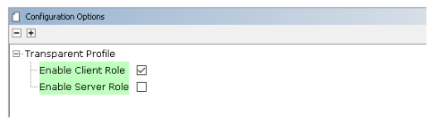

3.1.1.6 BLE Multilink Transparent UART
Getting Started with Central Building Blocks
BLE Multilink Transparent UART
Introduction
This section helps users to create a multilink central device and send/receive characters between connected BLE devices over Microchip proprietary Transparent UART Profile. The multilink central enables users to connect multiple peripheral devices to a central device. The central and peripheral devices in this tutorial are the WBZ451 devices.
Users can choose to run the precompiled application example .hex file on
the WBZ451 Curiosity Board and experience the demo or go through
the steps involved in developing this application from scratch.
It is recommend to follow the examples in order, by learning the basic concepts first and then progressing to the more advanced topics.
Recommended Reading
Hardware Requirement
| Tool | Qty |
|---|---|
| WBZ451 Curiosity Board | 3 (min) |
| Micro USB cable | 3 |
SDK Setup
Software
Smartphone App
None
Programming the Precompiled Hex File or Application Example
Programming the .hex File using MPLAB X IPE
- Central Device – Precompiled
.hexfile is located in"<Harmony Content Path>\wireless_apps_pic32cxbz2_wbz45\apps\ble\building_blocks\central\profiles_services\multilink\hex"folder - Peripheral Device – Precompiled
.hexfile is located in"<Harmony Content Path>\wireless_apps_pic32cxbz2_wbz45\apps\ble\building_blocks\Peripheral\profiles_services\peripheral_trp_uart\hex"folder Follow the steps mentioned here
Programming the Application using MPLAB X IDE
- Follow steps mentioned in the Running a Precompiled Example section.
- Central Device – Open and program the
application example "
central_ml_trp_uart.X" located in "<Harmony Content Path>\wireless_apps_pic32cxbz2_wbz45\apps\ble\building_blocks\central\profiles_services\multilink\firmware"using MPLAB X IDE - Peripheral Device – Open and program the
application example "
peripheral_trp_uart.X" located in "<Harmony Content Path>\wireless_apps_pic32cxbz2_wbz45\apps\ble\building_blocks\peripheral\profiles_services\peripheral_trp_uart\firmware"using MPLAB X IDE
For more details on finding the Harmony content path, refer to Installing the MCC Plugin
Demo Description
Upon programming the demo application, central device (WBZ451) will start scanning for near by peripheral devices to connect. After a connection has been made data can be sent back and forth over UART between the two devices that are connected. The central device continues scanning until 100 secs and allows new peripheral devices that are advertising to join. For this example we are going to demonstrate three BLE links
------------------Central Device------------------
| | |
| | |
Peripheral Device Peripheral Device Peripheral Device
Demo application prints the status messages "Scanning" at the initiation of the scan process, "Connected!" upon successful connection, and "Disconnected" when the connection is lost, within a terminal emulator interface.
- Baud Rate/Speed – 115200 (as configured in SERCOM configuration)
- Parity – None
- Data Bits – 8
- Stop Bits – 1
- Flow Control – None
Application data to be sent to the connected peripheral device must be entered in the terminal emulator.
Testing
- Device 1 – to have PUBLIC address of {0xA1, 0xA2, 0xA3, 0xA4, 0xA5, 0xA6}
- Device 2 – to have PUBLIC address of {0xB1, 0xB2, 0xB3, 0xB4, 0xB5, 0xB6}
- Device 3 – to have PUBLIC address of {0xC1, 0xC2, 0xC3, 0xC4, 0xC5, 0xC6}
For more details on changing the device address, refer to the “Set PUBLIC Device Address” in 3.1.2.6 BLE Transparent UART section.
Demo Experience when Using Four WBZ451 Curiosity Boards, Three Configured as Peripheral and One Configured as Central Device
peripheral_trp_uart on at least two WBZ451
Curiosity Boards and central_ml_trp_uart application on one WBZ451 Curiosity Boards.- Board1 – WBZ451 Curiosity Board with
central_trp_uartApplication Programmed- Open TeraTerm and configure as mentioned below:Terminal Settings
- Baud Rate/Speed – 115200 (as configured in SERCOM configuration)
- Parity – None
- Data Bits – 8
- Stop Bits – 1
- Flow Control – None
- Reset the board. Upon reset, "Scanning" message is displayed on the TeraTerm.
- Upon finding peripheral device with public address {0xA1, 0xA2, 0xA3, 0xA4, 0xA5, 0xA6} message “Found Peer Node” will be displayed and a connection request will be initiated “Initiating connection”.
- During the scan time if more
devices are available which will be true in this case, central device will keep
initiating connections with the new peer nodes.
Use these settings under “Setup->Terminal…” and “Setup->Serial port…”

- Open TeraTerm and configure as mentioned below:
- Board2(Device1) – WBZ451 Curiosity Board with
peripheral_trp_uartApplication Programmed - Board3(Device2) – WBZ451 Curiosity Board with
peripheral_trp_uartApplication Programmed - Board4(Device3) – WBZ451 Curiosity Board with
peripheral_trp_uartApplication Programmed - Board2/Board3/Board4:
- Open TeraTerm and configure as
mentioned below:Terminal Settings
- Baud Rate/Speed – 921600 (as configured in SERCOM configuration)
- Parity – None
- Data Bits – 8
- Stop Bits – 1
- Flow Control – None
- Reset the board. Upon reset, “Advertising” message is displayed on the TeraTerm.

- Open TeraTerm and configure as
mentioned below:
- Recommendation is to Reset Central device first and then the Peripheral devices one by one.
- Scanner is configured to scan only for 100 seconds, user must ensure the peer device is advertising.
After connection establishment, both the Peripheral device (Board2/3/4) and Central device (Board1) will display "Connected!" message on respective terminal windows.
Developing this Application from Scratch using MCC
This section explains the steps required by a user to develop this application example from scratch using MCC
Create a new MCC Harmony Project. For more details, refer to 2.5 Creating a New MCC Harmony Project.
Import component configuration: This step helps users setup the basic components and configuration required to develop this application. The imported file is of format
.mc3and is located in the path"<Harmony Content Path>\wireless_apps_pic32cxbz2_wbz45\apps\ble\building_blocks\central\profiles_services\multilink\firmware\central_ml_trp_uart.X".For more details on importing the component configuration , refer to 15.3 Importing Existing App Example ConfigurationNote: Import and export functionality of Harmony component configuration will help users to start from a known working setup of MCC configurationAccept Dependencies or Satisfiers, select Yes
- Verify if the project graph window has all the expected configuration. as illustrated in the following figure:
Figure 3-57. Project Graph
Verifying Scan,Connection and Transparent UART Profile Configuration
Select BLE Stack component in project graph, to open component configuration and configure as illustrated in the following figure.

- Select Transparent Profile component in project graph, to open component configuration and configure as illustrated in the following figure.
Figure 3-58. Transparent Profile Configuration 
Generating a Code
For more details on code generation, refer to 15.2 MPLAB Code Configurator(MCC) Code Generation
Files and Routines Automatically Generated by the MCC


app_ble.c| Source Files | Usage |
|---|---|
app.c | Application State machine, includes calls for Initialization of all BLE stack (GAP,GATT, SMP, L2CAP) related component configurations |
app_ble\app_ble.c | Source Code for the BLE stack related component configurations, code related to function
calls from app.c |
app_ble\app_ble_handler.c | All GAP, GATT, SMP and L2CAP Event handlers |
app_ble\app_trspc_handler.c | All Transparent UART Client related Event handlers |
config\default\ble\profile_ble\ble_trspc\ble_trspc.c | All Transparent Client Functions for user application |
app.c is autogenerated and has a state machine
based Application code sample, users can use this template to develop their
applicationHeader Files
ble_gap.h: The header file contains BLE GAP functions and is automatically included in theapp.cfileble_trspc.h: The header file associated with APIs and structures related to BLE Transparent Client functions for application user.
Function Calls
MCC generates and adds the code to initialize the BLE Stack GAP, GATT, L2CAP and SMP in
APP_BleStackInit() function
APP_BleStackInit()is the API that will be called inside the Applications Initial State --APP_STATE_INITinapp.c
User Application Development
Include
-
definitions.hin all the files where UART will be used to print debug information.Note:definitions.his not specific to just UART peripheral, instead it must be included in all application source files where peripheral functionality will be exercised. -
User action is required as mentioned 15.1 User Action
Start Scanning
// Scanning Enabled
BLE_GAP_SetScanningEnable(true, BLE_GAP_SCAN_FD_ENABLE, BLE_GAP_SCAN_MODE_OBSERVER, 1000);
// Output the status string to UART
SERCOM0_USART_Write((uint8_t *)"Scanning \r\n", 11);This API is called in the Applications initialstate - APP_STATE_INIT in
app.c. Scan duration is 100 secs
Scan Results and initiating a BLE Connection
-
BLE_GAP_EVT_ADV_REPORTevent is generated upon finding Advertisements on legacy channels -
BLE connection can be initiated by using the API
BLE_GAP_CreateConnection(&createConnParam_t);
// code snippet to filter scan results and initiate connection
// Filter Devices based of Address, for this example address checking only 2 bytes
if ((p_event->eventField.evtAdvReport.addr.addr[0] == 0xA1 && p_event->eventField.evtAdvReport.addr.addr[1] == 0xA2) ||
(p_event->eventField.evtAdvReport.addr.addr[0] == 0xB1 && p_event->eventField.evtAdvReport.addr.addr[1] == 0xB2) ||
(p_event->eventField.evtAdvReport.addr.addr[0] == 0xC1 && p_event->eventField.evtAdvReport.addr.addr[1] == 0xC2))
{
SERCOM0_USART_Write((uint8_t *)"Found Peer Node\r\n", 17);
BLE_GAP_CreateConnParams_T createConnParam_t;
createConnParam_t.scanInterval = 0x3C; // 37.5 ms
createConnParam_t.scanWindow = 0x1E; // 18.75 ms
createConnParam_t.filterPolicy = BLE_GAP_SCAN_FP_ACCEPT_ALL;
createConnParam_t.peerAddr.addrType = p_event->eventField.evtAdvReport.addr.addrType;
memcpy(createConnParam_t.peerAddr.addr, p_event->eventField.evtAdvReport.addr.addr, GAP_MAX_BD_ADDRESS_LEN);
createConnParam_t.connParams.intervalMin = 0x10;
createConnParam_t.connParams.intervalMax = 0x10;
createConnParam_t.connParams.latency = 0;
createConnParam_t.connParams.supervisionTimeout = 0x48;
SERCOM0_USART_Write((uint8_t *)"Initiating Connection\r\n", 23);
BLE_GAP_CreateConnection(&createConnParam_t);
}

Connected and Disconnected Events
-
In
app_ble_handler.cBLE_GAP_EVT_CONNECTEDevent will be generated when a BLE connection is completed.
Connection Handler
-
Connection handle associated with the peer peripheral device needs to be saved for data exchange after a BLE connection.
-
p_event->eventField.evtConnect.connHandlehas this information -
In Multilink application, unique connection handler's will be generated for all the peripheral links

// Global Variables uint8_t scanAddr[12]; // var to store ASCII address extern uint16_t conn_hdl[3]; extern uint8_t no_of_links; // Connected Event SERCOM0_USART_Write((uint8_t *)"Connected!\r\n", 12); conn_hdl[no_of_links] = p_event->eventField.evtConnect.connHandle; no_of_links++; // Disconnected Event SERCOM0_USART_Write((uint8_t *)"Disconnected\r\n", 15);
Scan Timeout Event
-
In
app_ble_handler.c,BLE_GAP_EVT_SCAN_TIMEOUTevent is generated when BLE Scan duration expires.SERCOM0_USART_Write((uint8_t *)"Scan Completed! \r\n", 18);
Transmit Data
-
Add "
APP_MSG_UART_CB" to the generatedAPP_MsgId_T
BLE_TRSPC_SendData(conn_hdl , 1, &data);is the API to be used for sending data towards the central device.Note: The precompiled application example uses a UART callback to initiate the data transmission upon receiving a character on UART
Example Implementation for Transmitting the received data over UART using the
BLE_TRSPC_SendData API
uint16_t conn_hdl[3] = {0xFFFF, 0xFFFF, 0xFFFF};// connection handle info captured @BLE_GAP_EVT_CONNECTED event
uint8_t no_of_links;// No of connected peripheral devices
uint8_t i = 0;// link index
uint8_t uart_data;
void uart_cb(SERCOM_USART_EVENT event, uintptr_t context)
{
APP_Msg_T appMsg;
// If RX data from UART reached threshold (previously set to 1)
if( event == SERCOM_USART_EVENT_READ_THRESHOLD_REACHED )
{
// Read 1 byte data from UART
SERCOM0_USART_Read(&uart_data, 1);
appMsg.msgId = APP_MSG_UART_CB;
OSAL_QUEUE_Send(&appData.appQueue, &appMsg, 0);
}
}
void APP_UartCBHandler()
{
// Send the data from UART to connected device through Transparent service
BLE_TRSPC_SendData(conn_hdl[i], 1, &uart_data);
i++;
if(i==no_of_links) i = 0; //reset link index
}
////////////////////////////////////////////////////////////////////////////////////
// Register call back when data is available on UART for Peripheral Device to send
// Enable UART Read
SERCOM0_USART_ReadNotificationEnable(true, true);
// Set UART RX notification threshold to be 1
SERCOM0_USART_ReadThresholdSet(1);
// Register the UART RX callback function
SERCOM0_USART_ReadCallbackRegister(uart_cb, (uintptr_t)NULL);
////////////////////////////////////////////////////////////////////////////////////
//If msg received in Queue, handle the Queue message based on msgID
if (OSAL_QUEUE_Receive(&appData.appQueue, &appMsg, OSAL_WAIT_FOREVER))
{
if(p_appMsg->msgId==APP_MSG_BLE_STACK_EVT)
{
// Pass BLE Stack Event Message to User Application for handling
APP_BleStackEvtHandler((STACK_Event_T *)p_appMsg->msgData);
}
else if(p_appMsg->msgId==APP_MSG_BLE_STACK_LOG)
{
// Pass BLE LOG Event Message to User Application for handling
APP_BleStackLogHandler((BT_SYS_LogEvent_T *)p_appMsg->msgData);
}
else if(p_appMsg->msgId==APP_MSG_UART_CB)
{
// Transparent UART Client Data transfer Event
APP_UartCBHandler();
}
}app.capp.capp.cReceive Data
-
BLE_TRSPC_EVT_RECEIVE_DATAis the event generated when data is sent from central device -
Users need to use the
BLE_TRSPC_GetDataLength(&data_len)API to extract the length of application data received -
BLE_TRSPC_GetData(&conn_hdl, data);API is used to retrieve the data,conn_hdlis the value obtained from Connection Handler sectionNote:BLE_TRSPC_Event_T p_eventstructure stores the information about BLE transparent UART callback functions
Example Implementation for printing the received data from peripheral device over UART
/* TODO: implement your application code.*/
uint16_t data_len;
uint8_t *data;
// Retrieve received data length
BLE_TRSPC_GetDataLength(p_event->eventField.onReceiveData.connHandle, &data_len);
// Allocate memory according to data length
data = OSAL_Malloc(data_len);
if(data == NULL)
break;
// Retrieve received data
BLE_TRSPC_GetData(p_event->eventField.onReceiveData.connHandle, data);
// Output received data to UART
SERCOM0_USART_Write(data, data_len);
// Free memory
OSAL_Free(data);
For more details on exercising various other BLE functionalities refer to BLE Stack API section.